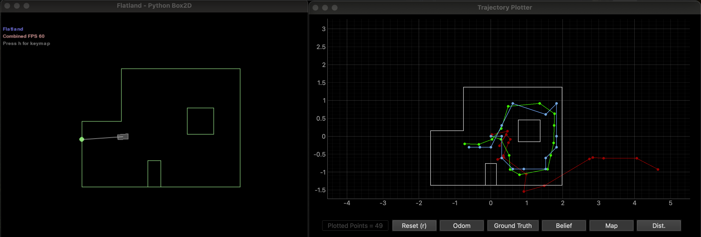

Objective
In this lab, I implemented grid localization using a Bayes filter on a virtual robot. The robot's world is discretized into a 12 x 9 x 18 grid (x, y, theta). The filter combines noisy odometry with 18 ToF range measurements at each time step to probabilistically estimate the robot's most likely position.
Implementation
The Bayes filter requires five functions. Each iteration runs a prediction step (using the motion model to spread belief) followed by an update step (using sensor data to sharpen it).
compute_control
Extracts the control input (rotation1, translation, rotation2) from two odometry poses. Angles are normalized to [-180, 180).
def compute_control(cur_pose, prev_pose):
delta_trans = np.sqrt((cur_pose[0] - prev_pose[0])**2
+ (cur_pose[1] - prev_pose[1])**2)
delta_rot_1 = mapper.normalize_angle(
np.degrees(np.arctan2(cur_pose[1] - prev_pose[1],
cur_pose[0] - prev_pose[0])) - prev_pose[2])
delta_rot_2 = mapper.normalize_angle(
cur_pose[2] - prev_pose[2] - delta_rot_1)
return delta_rot_1, delta_trans, delta_rot_2odom_motion_model
Computes the transition probability between two poses given the odometry control input. It compares the control that would be needed for the transition against what odometry actually reported, using three independent Gaussians.
def odom_motion_model(cur_pose, prev_pose, u):
rot1, trans, rot2 = compute_control(cur_pose, prev_pose)
prob = (loc.gaussian(rot1, u[0], loc.odom_rot_sigma)
* loc.gaussian(trans, u[1], loc.odom_trans_sigma)
* loc.gaussian(rot2, u[2], loc.odom_rot_sigma))
return probprediction_step
For each possible current cell, sums the transition probability from every previous cell weighted by its belief. Cells with belief below 0.0001 are skipped to keep computation manageable.
def prediction_step(cur_odom, prev_odom):
u = compute_control(cur_odom, prev_odom)
for cx in range(mapper.MAX_CELLS_X):
for cy in range(mapper.MAX_CELLS_Y):
for ca in range(mapper.MAX_CELLS_A):
bel_bar = 0
cur_pose = mapper.from_map(cx, cy, ca)
for px in range(mapper.MAX_CELLS_X):
for py in range(mapper.MAX_CELLS_Y):
for pa in range(mapper.MAX_CELLS_A):
if loc.bel[px][py][pa] < 0.0001:
continue
prev_pose = mapper.from_map(px, py, pa)
bel_bar += (odom_motion_model(cur_pose, prev_pose, u)
* loc.bel[px][py][pa])
loc.bel_bar[cx][cy][ca] = bel_bar
loc.bel_bar = loc.bel_bar / np.sum(loc.bel_bar)sensor_model
Compares the robot's actual 18 range readings against the precached true readings for a given cell using a Gaussian for each measurement.
def sensor_model(obs):
prob_array = np.zeros(mapper.OBS_PER_CELL)
for i in range(mapper.OBS_PER_CELL):
prob_array[i] = loc.gaussian(loc.obs_range_data[i][0],
obs[i], loc.sensor_sigma)
return prob_arrayupdate_step
Multiplies each cell's prior belief by the product of its 18 sensor likelihoods, then normalizes.
def update_step():
for cx in range(mapper.MAX_CELLS_X):
for cy in range(mapper.MAX_CELLS_Y):
for ca in range(mapper.MAX_CELLS_A):
prob_array = sensor_model(mapper.obs_views[cx][cy][ca])
loc.bel[cx][cy][ca] = np.prod(prob_array) * loc.bel_bar[cx][cy][ca]
loc.bel = loc.bel / np.sum(loc.bel)Results
The table below shows the filter's belief vs. ground truth at each time step.
| Step | Prob | Ground Truth (x, y) | Belief (x, y) | Error (x, y) |
|---|---|---|---|---|
| 0 | 1.00 | (0.282, -0.087) | (0.305, 0.000) | (-0.023, -0.087) |
| 1 | 1.00 | (0.509, -0.533) | (0.305, -0.610) | (0.204, 0.077) |
| 2 | 1.00 | (0.509, -0.533) | (0.305, -0.610) | (0.204, 0.077) |
| 3 | 1.00 | (0.537, -0.932) | (0.610, -0.914) | (-0.073, -0.017) |
| 4 | 1.00 | (0.796, -1.073) | (0.914, -0.914) | (-0.119, -0.159) |
| 5 | 1.00 | (1.581, -0.921) | (1.524, -0.914) | (0.057, -0.006) |
| 6 | 1.00 | (1.669, -0.537) | (1.524, -0.610) | (0.145, 0.072) |
| 7 | 1.00 | (1.749, -0.186) | (1.829, -0.305) | (-0.080, 0.118) |
| 8 | 0.97 | (1.762, 0.305) | (1.829, 0.000) | (-0.067, 0.305) |
| 9 | 1.00 | (1.770, 0.629) | (1.829, 0.914) | (-0.059, -0.285) |
| 10 | 1.00 | (1.361, 0.917) | (1.524, 0.610) | (-0.163, 0.308) |
| 11 | 1.00 | (0.480, 0.834) | (0.610, 0.914) | (-0.129, -0.081) |
| 12 | 1.00 | (0.290, 0.212) | (0.305, 0.305) | (-0.014, -0.093) |
| 13 | 1.00 | (0.034, -0.086) | (0.000, -0.305) | (0.034, 0.218) |
| 14 | 1.00 | (-0.334, -0.226) | (-0.305, -0.305) | (-0.029, 0.079) |
| 15 | 1.00 | (-0.727, -0.211) | (-0.610, -0.305) | (-0.117, 0.094) |
The video below shows the full run. Green is ground truth, red is odometry, and blue is the Bayes filter belief.

Green = ground truth, Red = odometry, Blue = Bayes filter belief.
Analysis
The filter localizes well, with most x/y errors under 0.2m (less than one grid cell of 0.3048m). It reports probability ~1.00 at nearly every step. Steps near walls or obstacles (3, 5, 12, 14) had the smallest errors, since the range measurements produce a distinctive signature that uniquely identifies the cell. The weakest steps were 8 (probability 0.97, y-error 0.305m) and 10 (y-error 0.308m), both in more open regions where range readings from neighboring cells look similar. The filter also tends to be overconfident, assigning probability 1.00 even with non-trivial error. This is expected with a coarse grid where probability mass concentrates in a single cell once the sensor model strongly favors it.
Acknowledgements
Claude AI was used for assistance with understanding the Bayes filter algorithm, debugging simulator setup (tkinter, Box2D), and structuring this report. All simulator runs, data collection, and video recording were done by me.